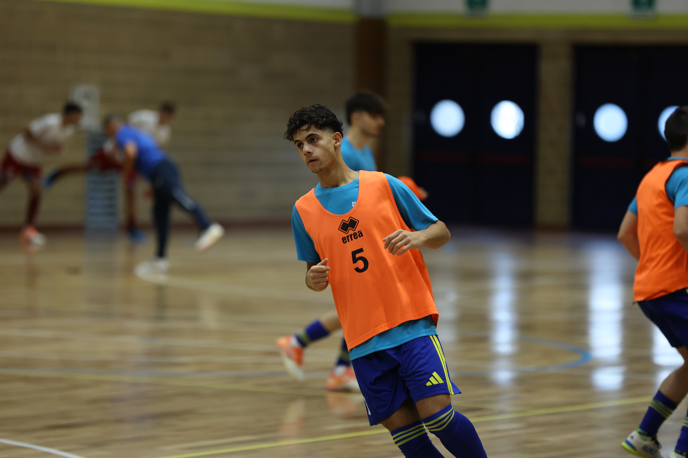

Doppiette di Avitabile e Kabine, acuto di Bon. Il Manzano vince ma deve crescere
Dopo la sconfitta all’esordio contro il Pordenone (3-1) e la vittoria in trasferta sul campo del Belluno (5-1), il Manzano U19 raccoglie un altro successo a spese dell’Udinese Futsal, superata per 5-3.
Manzano che ha iniziato un nuovo ciclo giovanile. Diversi giocatori sono alle prime armi che stanno prendendo confidenza con la disciplina. Dall’altra parte un’Udinese che si trova sullo stesso percorso, cercando di rimpolpare il movimento regionale con nuovi volti e talenti.
I seggiolai padroni di casa si appoggiano principalmente alla qualità di capitan Avitabile e di Kabine, oltre alle parate del portiere Fedrigo che in avvio allunga il piede sul rasoterra di Modotti, destinato al secondo palo.
Parita che sembra ricalcare il copione del match della prima squadra del giorno prima, solo che questa volta è il Manzano ad essere accorto in difesa, pronto a colpire in ripartenza, sfruttando gli spazi lasciati dall’Udinese.
Vantaggio Manzano al 3’: Avitabile conduce centralmente trovando l’angolo giusto per il tiro dell’1-0.
I seggiolai sono attenti dietro ma rischiano su qualche leziosità personale, in un’occasione Fedrigo e Imamovic sono decisivi nella chiusura su una sanguinosa palla persa. Il portierone ci mette del suo smanacciando sul palo la conclusione di Chougui.
Padroni di casa che raddoppiano ancora grazie ad Avitabile, bravo a servire il movimento di Kabine in ripartenza per il 2-0 a metà primo tempo.
L’Udinese inizia a perdere ritmo e soffre tantissimo in ripartenza. A 4’ dall’intervallo Kabine smarca Bon in mezzo con lo scavetto per il tris. Immediato il poker con Kabine che da fuori indovina una botta che supera Bazzan.
Gli ultimi minuti sembrano in controllo locale con due palle gol ghiotte per Marmi Salah, prima che l’Udinese accorci grazie al missile di Sartor su corner.
Nella ripresa non succede molto. Il Manzano va subito sul 5-1 grazie ad Avitabile che segna su calcio piazzato, poi la partita si perde in tanti piccoli duelli tra due squadre chiamate a iniziare due lunghi percorsi di crescita.
Nel finale si ridesta l’Udinese: altra botta dalla distanza di Sartor per il 2-5, prima che un’autorete su corner porti al definitivo 5-3.
Prossima giornata in trasferta sul campo del Conegliano, domenica prossima.